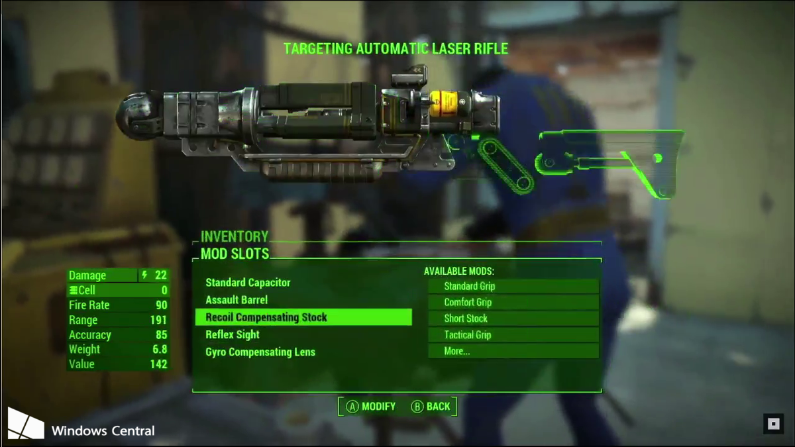
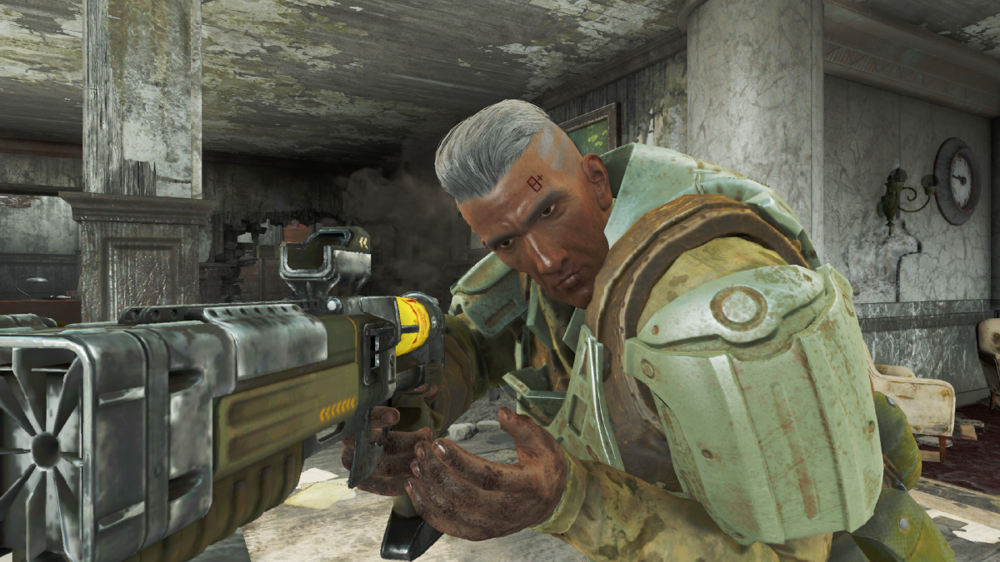

Sinopse:
Fallout 4 é um jogo lançado em enovemgor de 2015 do genro rpg de ação ambientado em um mondo aberto. O jogador assumee o papel de um persogem cridao pelo proprio, que apos um comuniacado no jornal de dotonações atômicas vai para orefugio 111 onde entra em estase criogenico. Apos presenciar a morte de seu cônjugue e o sequestro de seu filho que é apenas um bebê, o jogador se aventura pela Comunidade (Commonwealth) de Massachusetts, Nas areas ao redor de Boston. O jogo é baseado em sistema de RPG, de modo single player, com exploração de mundo aberto. Fallout 4 é o primeiro jogo da franquia em que o protagonista tem voz.
DLCs:
O jogo conta com 6 DlCs: Automatron, Wasteland Workshop, Far Harbor, Contraptions Workshop, Vault-Tec Workshop, Nuka-World (lançadas na respectiva ordem). Cada uma adiciona novos itens coisas para se criar, novos lugares para explorar e algumans adcionam novas missões.
Automatron:
Você descobre um grupo de pessoas sendo atacado após chegar lá você ajuda a unica sobrevivente a robô Ada abuscar vingança pelos sue criadore e amigos mortos, e para livra a comunidade de um novo mal a Mêcanista.
Far Harbor:
Apôs escutar a nova radio adcionada você resbe a missão de ir encotrar a filha desaparecida de um pescador, apôs algumas investigações na casa você descobre que ela foi pra Far Harbor (uma ilha ao norte) e vai atras dela, chegando lá você descobre que está prestes a acontecer uma guerra entra as 3 principais cidades, a cidade de Far Harbor, Acadia, e o Núcleo.
Vault-Tec Workshop:
Quando você sintoniza em uma nova rádio você descobre um novo Vault e vai até lá, descbrindo que ele não avia sido terminado a tempo da guerra e ajuda a supervisora a finasar algumas pesquisas pendntes.
Nuka-World:
Você sintonisa no sinal do parque tematico Nuka-World quando chega até lá você passa por uma corredor de obstaculos, depois luta com o superchefe Colter, após derrotá lo você vira o novo superchefe e tem que distribuir as partes do paque entre as guangues de invasores que vivem lá.
Criticas:
Fallout 4 foi um sucesso de vendas e de crítica, com muitos elogiando a profundidade do mundo do jogo, a liberdade dada ao jogador, a quantidade de coisas para fazer, a história, sistema de profissões, as personagens e a trilha sonora. A qualidade gráfica, contudo, não foi unânime e os problemas técnicos foram criticados. O jogo vendeu mais de 12 milhões de unidades e faturou 750 milhões de dólares nas primeiras 24 horas de lançamento.
Informações:
| Produtora | Editora | Produtor | Designer | Escritor | Programador | Artista | Compositor | Motor | Plataformas | Data de lançamento | Modos de jogo |
| Bethesda Game Studios | Bethesda Softworks | Jeff Gardiner | Emil Pagliarulo | Emil Pagliarulo | Guy Carver | Istvan Pely | Inon Zur | Creation Engine | Windows,PlayStation,Xbox | Fallout | 10/11/2015 |
Items:
Armas:
O jogo conta com um vasto arsenal indo de armas corpo-a-corpo até armas de plasma, dentre elas pistola 10mm(primeira arma de fogo que você consegu no jogo), armas de cano(as armas mais comuns do jogo, que são muito uteis no começo do jogo), armas de plasma, lazer, dentre outras, também é possivel modificar as armas, colocando lunetas, cano extendido, silenciadores, coronhas e varios outros.
Armaduras e Roupas:
As armaduras do jogo são diversas indo de armaduras de couro até armaduras de combate, cada classe de armadura contem diversos tamanhos, que alteram o peso e a resistencia a dano em geral, tambem é posivel colocar diveasa modificações que alteram a resistencia a dano especificos, e oltros que adicionam bolsos para carregar mais tens, contrução leve que diminui o peso das peças, dentre diverso outros.
É possivel usar roupas pro baixo das armaduras que adicionam um pocuco mais de proteção, ou peças unicas que subistiruem toda a armadura, e são possiveis adcionar modificações que você consegue fazendo uma missão especifica.
Sucatas:
São os itens que são usados para construção e modificação dos itens.
Power Armors:
Diferentes dos jogo anteriores onde elas eram armaduras normais, no Fallout 4 as Power Armors são como exoesqueleto que é possivel combinar as partes é modificalas. Para manter o seu funcionamneto é nescessario um reator de fusão que podê ser achado explorando o mapa, derrotando inimigos especificos ou comprando.

Mods:
A comunidade de mod é bem apoida pela produtora do jogo, que apartir de uma taualização, deixou um espaço no menu inical do jogo exclusivo para mods feitos por fans, esse menu foi aplicado em todas as versões e no pc existem um site dedicado a isso o Nexus que possui um gerenciador de mod proprio o, Nexus mod manager. O site não possui mods apenas de Fallout 4 e sim de vario jogos como Skyrim, Fallout 3 e New Vegas, The Witcher 2 e 3 dentre varios outros.
Gameplay Gravada com Mods:
Mods Usados na Gameplay:
Nora Spouse Companios: https://www.nexusmods.com/fallout4/mods/24680/? - Esse mod faz com que a esposa do seu personagen (caso ele seja Homem) sobreviva.
See Throug Scope: https://www.nexusmods.com/fallout4/mods/9476 - Mod adicionas miras que você consegue visão periferica.
Pip-Boy Flashlight: https://www.nexusmods.com/fallout4/mods/10840 - Mod Substitui aluz do Pip-Boy Por uma lanterna.
NCR Ranger Veteran Armor: Adisciona a armadura do NCR Ranger do Fallout New Vegas
More Power Armour Mods: https://www.nexusmods.com/fallout4/mods/6982 - Adisciona a pocibilidade de se usar uma modificação extra na Power Armor.
Fallout 4 Season: https://www.nexusmods.com/fallout4/mods/5810 - Adiciona estações.
Everyone's Best Friend: https://www.nexusmods.com/fallout4/mods/13459 - Permite levar Dogmeat (o cachorro) e mais um campanheiro ao mesmo tempo.
Cross Pre-War Cybernatics: https://www.nexusmods.com/fallout4/mods/8609 - Adiciona partes roboticas par o personagem usar como armadura.
Wastleand Melody's Service Rifle: https://www.nexusmods.com/fallout4/mods/28547 - Adiciona o Service Rifle do Fallout New Vegas porem possui varias modificações.